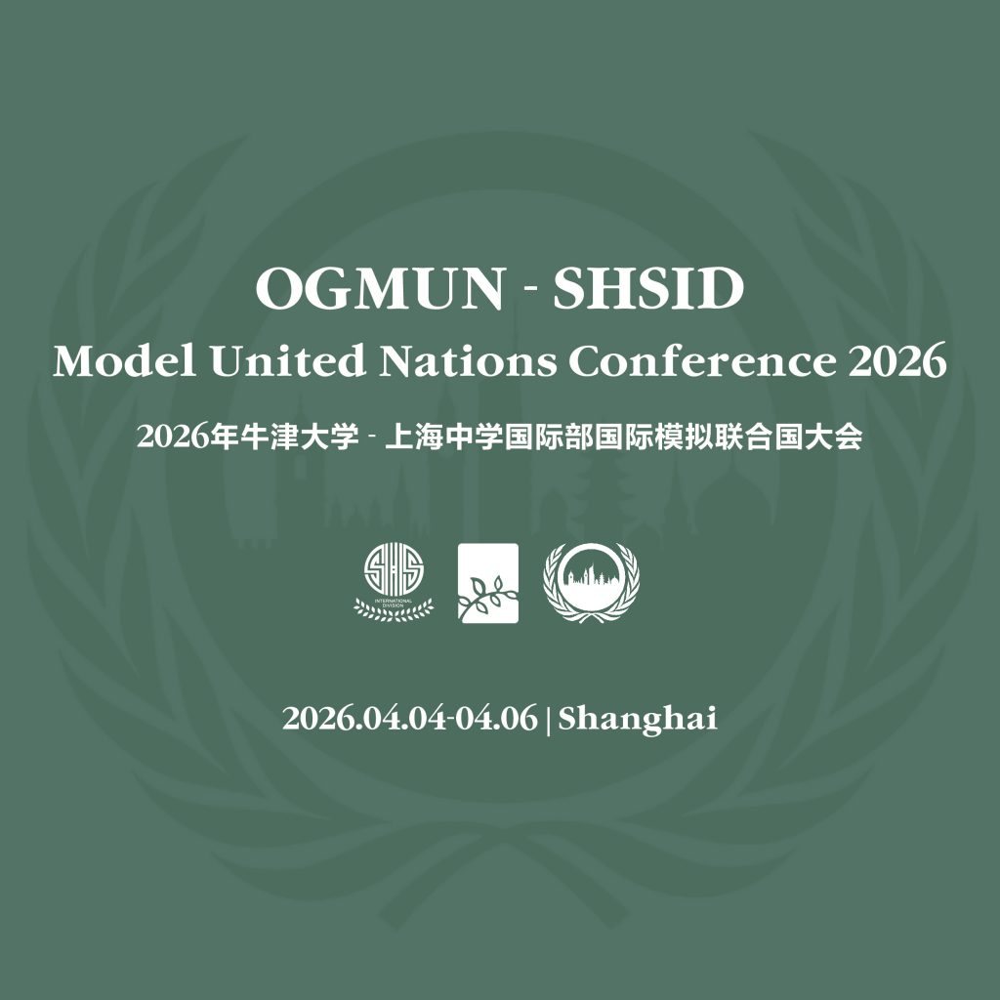
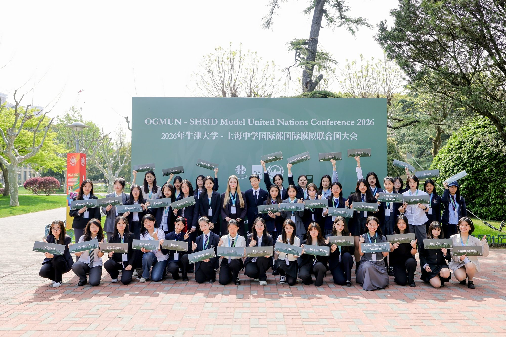
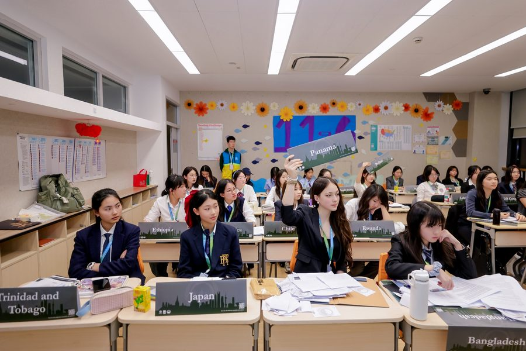
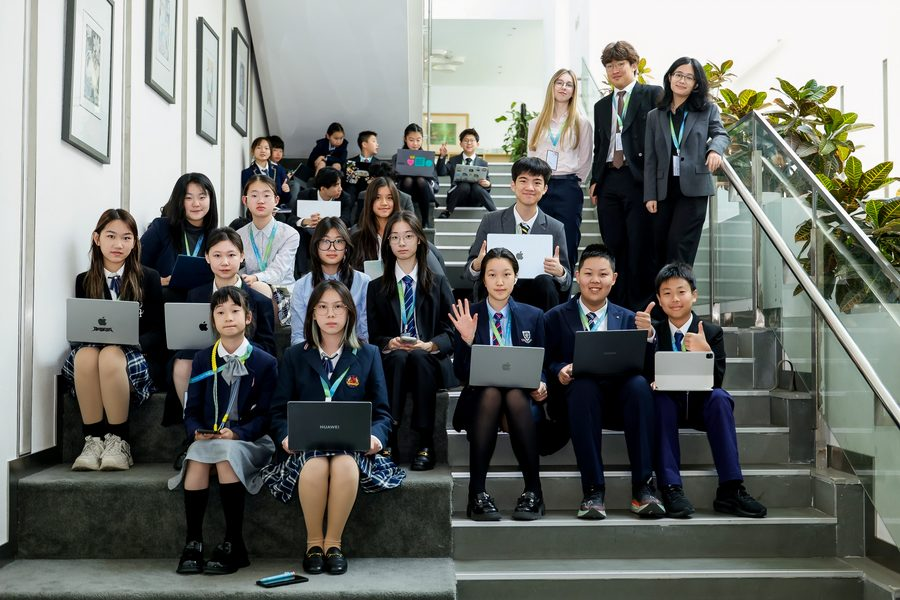
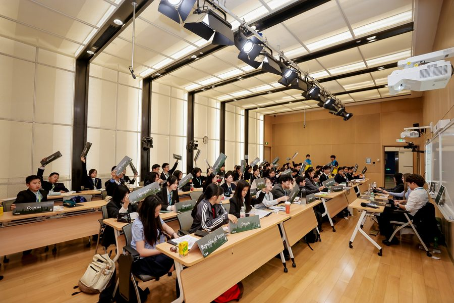
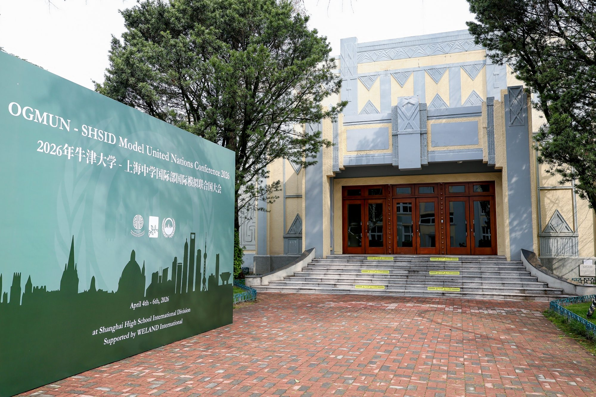

OGMUN · SHSID 2026
2026 年牛津大学与上海中学国际部国际模拟联合国大会
2026 年 4 月 4 日至 6 日 · 上海

组委会欢迎信
尊敬的模拟联合国指导教师、亲爱的代表们：
我们诚挚邀请您参加 2026 年牛津大学与上海中学国际部国际模拟联合国大会（OGMUN · SHSID 2026）。本届大会由牛津大学全球模拟联合国（Oxford Global MUN）、上海中学国际部（SHSID）与蔚蓝国际联合举办，将于 2026 年 4 月 4 日至 6 日在上海中学国际部举行。
大会自 2016 年落地上海以来，已走过十载历程。十年来，我们始终恪守学术严谨、多边协作与跨文化对话的核心追求，累计吸引逾 3,000 名优秀学子参与，覆盖全国 200 余所重点中学，参会满意度持续保持高位，已成为华东地区最具标杆意义的国际中学生学术会议之一。
作为英国历史悠久、学术声誉卓著的高校模联组织，牛津大学模联团队以议题前沿性与考据扎实著称。牛津大学主席团将亲赴上海主持议事，引导代表在严谨的规则框架下开展深度多边磋商。
本届大会继续在上海外国语高中教育的发轫高地上海中学国际部举办。上海中学创设于 1865 年，国际部自 1993 年成立以来致力于塑造学生的全球胜任力与自主探究品格。来自牛津大学的主席团队将与上海中学国际部优秀的学生秘书处深度协同，全程保障会场的高质量运行。
大会规模约 350 人，设置七个英文委员会，遵循无电子屏幕会场（议事辩论全程脱离电子屏幕，专注即席研讨与现场倾听）、重事实求证与重多边协商三大核心原则，推动各梯度的青年代表拓宽学术边界。
四月申城，春景初盛。我们期待在充满活力的上海与各位青年学子相见。
2026 年牛津大学与上海中学国际部国际模拟联合国大会组委会2026 年 1 月




委员会与议程架构
- DISEC
裁军与国际安全委员会
- Automated Disinformation Campaigns in the Digital Age数字时代自动化虚假信息传播活动
- 70 至 90 人
- ECOFIN
经济与金融委员会
- The Pros and Cons of Development Aid发展援助的利弊分析
- 70 至 90 人
- CSTD
联合国科学和技术促进发展委员会
- Regulation of the Attention Economy对注意力经济的监管
- 40 至 60 人
- CSW
联合国妇女地位委员会
- Gender Bias in Medical Research医学研究中的性别偏见
- 45 人
- COP31
联合国气候变化大会
- Adapting to a Future Beyond 1.5 Degrees适应全球升温超过 1.5 摄氏度的未来
- 35 至 40 人
- OAS
美洲国家组织
- The Status of Venezuela in the OAS委内瑞拉在美洲国家组织中的地位
- 30 至 35 人
- UNSC
联合国安全理事会
- Navigating Piracy in the Red Sea应对红海地区的海盗活动
- 30 人双代表制
会务日程
- 2026.01.13
- 代表报名开启，委员会与议题公布
- 2026.02.10
- 学术背景文件发布，国别意向提报开启
- 2026.03.01
- 牛津大学主席团名册公布
- 2026.03.20
- 会前学术在线工坊（3 月 20 日至 21 日）
- 2026.03.25
- 代表注册最终截止
- 2026.04.04
- 大会报到与开幕
会期详细日程
4 月 4 日
- 代表报到与注册
- 开幕典礼
- 分委员会全体会议 1
- 代表晚餐
- 分委员会全体会议 2
- 晚间闭馆
4 月 5 日
- 分委员会全体会议 3
- 代表午餐
- 分委员会全体会议 4
- 分委员会全体会议 5
- 指导教师圆桌座谈
- 代表晚餐
- 青年外交官学术工作坊
- 晚间闭馆
4 月 6 日
- 分委员会全体会议 6（决议草案表决）
- 闭幕典礼与学术荣誉表彰
- 代表午餐
- 代表离会返程
会场与周边住宿

- 会场地址
- 上海中学国际部
上海市徐汇区百色路 989 号 - 学校概况
- 上海中学创设于 1865 年，是中国近代知名学府。国际部创办于 1993 年，现有来自 40 余个国家和地区的约 3,100 名学子。
- 周边推荐酒店
- 佰舍服务式公寓西岸店（步行约 10 分钟，约 ¥400 / 间夜）
格林豪泰上海南站罗香路店（步行约 12 分钟，约 ¥300 / 间夜）
亚朵酒店上海南站石龙路店（步行约 25 分钟，约 ¥600 / 间夜）
组委会不提供客房代订，价格随市价浮动，供代表团自主预订参考。
参会收费
- 代表会费
- ¥1,880 / 位
- 费用涵盖
- 涵盖全套会议学术材料、会期正餐（4 月 4 日晚餐至 6 日午餐）、会前线上学术研习工作坊、人身意外保险及税费；不含住宿。
- 报名状态
- 本届大会代表注册已全面截止。